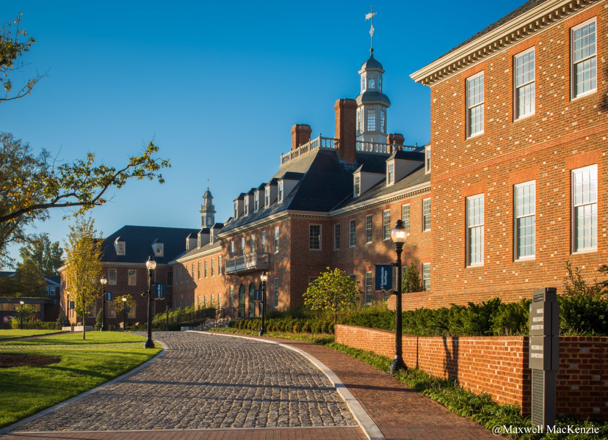

City Ridge reimagines a ten-acre site on upper Wisconsin Avenue — the former Fannie Mae headquarters — as a genuine piece of urban fabric. Nine buildings, 690 residences, over half a million square feet of office, a grocery-anchored retail street and a public park, woven through an existing mid-century campus by Kevin Roche.
As Executive Associate at Shalom Baranes Associates, Nicolas led the design team on three of the nine towers through design development, construction documents and construction administration. He also held CA responsibility across all six residential towers on the site.
The work balanced the site's heritage — Roche's fortress-like stone volumes — with a finer-grained, pedestrian-scaled architecture at street level. Material transitions, podium expression and the negotiation between historic and new construction were central disciplines of the project.